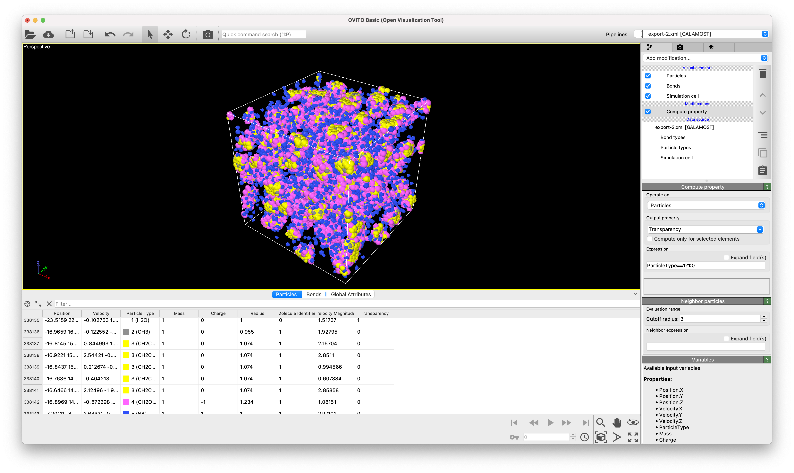

Usability with other programs¶
DL_MESO can be used in conjunction with several other programs developed by others to aid in simulation setup, visualise configurations and trajectories, and analyse results. (Note: this is not an exhaustive list!)
VMD¶
VMD is a free open-source software package for visualising and analysing MD and DPD data, capable of rendering single snapshots and generating movies of particle simulations. It can read in CONFIG and VTF trajectory files, the latter of which can be generated from DL_MESO_DPD HISTORY files using the traject_vtf.exe utility.
It includes plug-ins that enable it to read DL_POLY CONFIG and HISTORY files without any further manipulation.

OVITO¶
OVITO is a software package for visualising and analysing MD and DPD data, capable of rendering single snapshots and generating movies of particle simulations. Both the free open-source (OVITO Basic) and the commercial (OVITO Pro) versions can read DL_POLY CONFIG and GALAMOST XML files, the latter of which can be generated from DL_MESO_DPD HISTORY files using the traject_xml.exe utility.
{kind=link}
Paraview¶
Paraview is a free open-source software package for visualising and analysing grid-based data, capable of rendering single snapshots and generating movies of LBE simulations and from processed trajectory data from DPD simulations. VTK file formats (including those written by the DPD utilities local.exe and isosurfaces.exe) are native for this program, although it can also read Plot3D files generated by DL_MESO_LBE.
{kind=link}
UMMAP¶
UMMAP is a trajectory frame analysis tool for particle-based simulations, primarily those for soft matter, which can produce a range of statistics and graphical output. It can read in MD and DPD trajectories, including those in DL_MESO_DPD HISTORY files, and generates anotated snapshots that can be visualised with VMD.
KaGiSi¶
KaGiSi AnalysisTools are a bundle of programs designed to analyse particle trajectories, primarily those involving aggregation of molecules. The trajectories need to be provided in VMD trajectory files (or separated structure and coordinate files), which can be produced from DL_MESO_DPD HISTORY files using the traject_vtf.exe utility.
E-CAM modules¶
E-CAM, the Horizon 2020 European Centre of Excellence for HPC simulations and modelling, has a number of GitLab repositories with open source software for various forms of computational modelling. The Meso- and Multi-scale Modelling modules include several specifically designed for DL_MESO_DPD, including:
- Consistency checks for DL_MESO_DPD input files
- Converting binary HISTORY files into a human-readable form
- Analysis of charge dipole moments
- Autocorrelation functions of system and individual charge dipole moments
- Analysis of local tetrahedral ordering
- Port of DL_MESO_DPD to CUDA for CPU-hosted NVIDIA GPUs